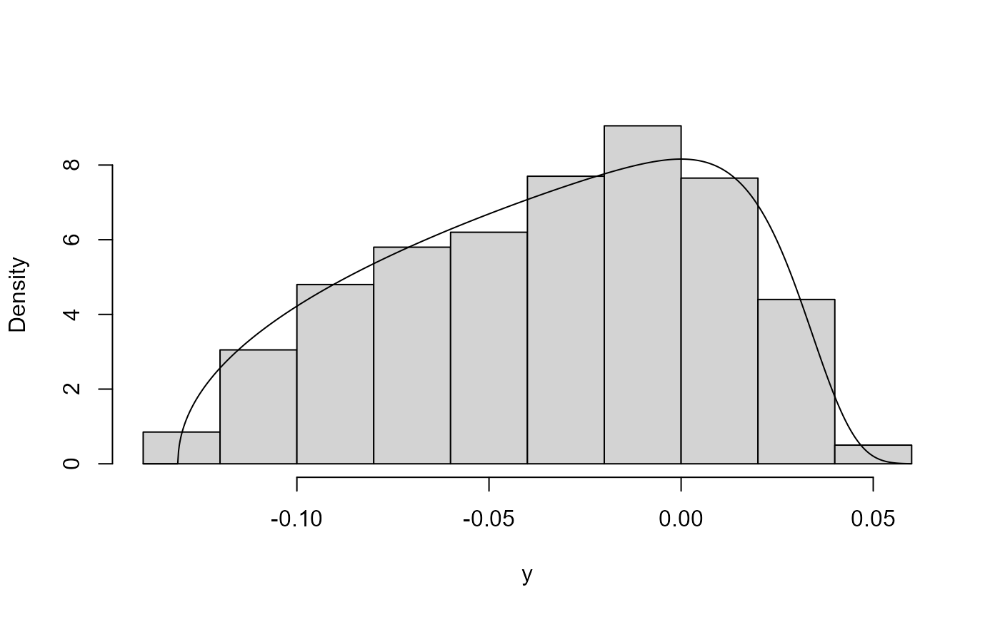
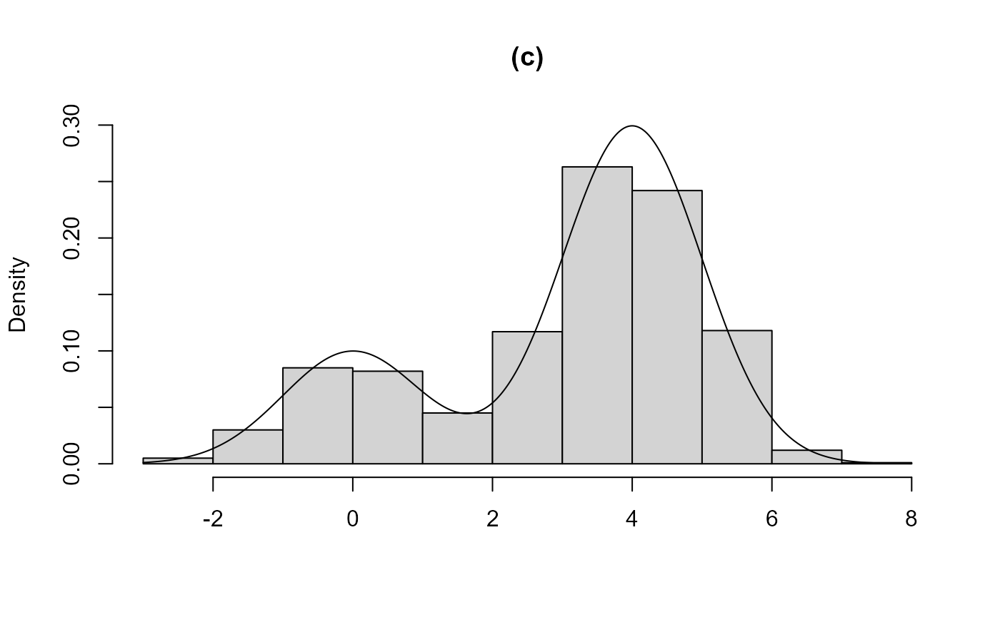
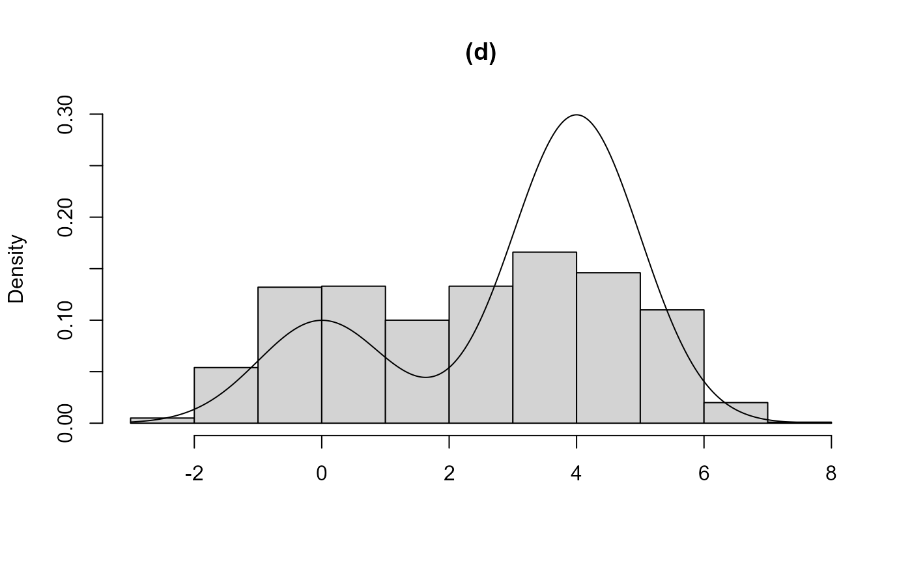
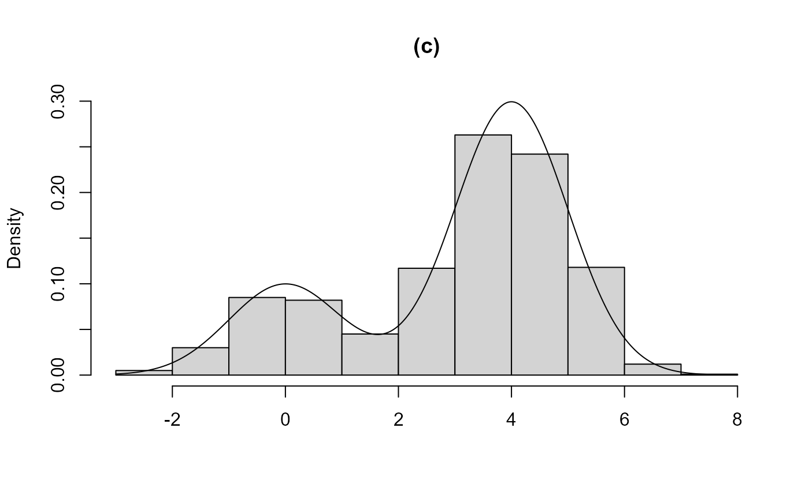
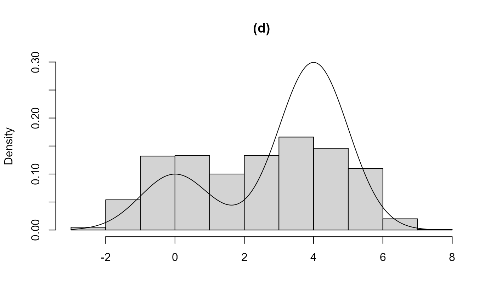

When can rust be used?
Paul Northrop
2025-12-27
Source:vignettes/rust-b-when-to-use-vignette.Rmd
rust-b-when-to-use-vignette.RmdThe generalized ratio-of-uniforms can be used to simulate from a wide range of \(d\)-dimensional multivariate probability densities, provided that \(d\) is not so large that its efficiency is prohibitively low (see the vignette Introducing rust). However, there are conditions that the target density \(f\) must satisfy for this method to be applicable. This vignette considers instances when these conditions do not hold and suggests strategies that may overcome this difficulty. Although the ratio-of-uniforms method can be used to simulate from multimodal densities, currently rust is designed to work effectively with unimodal densities. This vignette illustrates this using a simple 1-dimensional example.
Conditions on \(f\)
The generalized ratio-of-uniforms method is an acceptance-rejection type of algorithm. It can only be applied to densities for which its acceptance region can be enclosed within a bounding region of finite volume from which it is simple to simulate, usually a cuboidal bounding box. For a \(d\)-dimensional density \(f(x)\) the bounding box (if it exists) is the \((d+1)\)-dimensional set \(\{ 0 < u \leq a(r), \, b_i^-(r) \leq v_i \leq b_i^+(r), \, i = 1, \ldots, d \}\), where \[ \begin{eqnarray} a(r) &=& \sup_\chi \, f(x)^{1 / (r d + 1)}, \\ b_i^-(r) &=& \inf_{\chi_i^-} \, x_i \, f(x)^{r / (r d + 1)}, \\ b_i^+(r) &=& \sup_{\chi_i^+} \, x_i \, f(x)^{r / (r d + 1)}, \end{eqnarray} \] \(x =(x_1, \ldots, x_d)\), \(\chi \subseteq \mathbb{R}^d\), \(\chi_i^- = \{ x \in \chi, x_i \leq 0 \}\) and \(\chi_i^+ = \{ x \in \chi, x_i \geq 0 \}\). See the vignette Introducing rust for more details.
For a given value of the non-negative tuning parameter \(r\) we need \(f(x)\) and \(x_i ^ {r d + 1} f(x) ^ r, i = 1, \ldots, d\) to be bounded. If \(f(x)\) is unbounded then we could use a transformation of variable to obtain a density that is bounded. For bounded \(f(x)\) one or more of \(x_i ^ {r d + 1} f(x) ^ r, i = 1, \ldots, d\) can be unbounded if \(f(x)\) has heavy-tails. Again, we could use a transformation of variable to avoid this problem. For this issue the value of \(r\) matters and we may be able to achieve boundedness if a sufficiently large value of \(r\) is used. In rust \(r = 1/2\) is used by default because this is optimal in the Gaussian case. For heavy-tailed densities \(r\) needs to be larger, perhaps larger than 1. We consider these strategies in the next two sections.
Unbounded densities
A simple example of an unbounded density is that of a gamma random
variable with a shape parameter that is less than 1. Suppose that \(X \sim \mbox{gamma}(\alpha, 1)\) and \(\alpha < 1\). Then the density \(f_X(x)\) increases without limit as \(x \rightarrow 0\) from above. Let \(Y = (X^\lambda - 1) / \lambda\), that is, a
Box-Cox transformation (Box and Cox 1964)
of \(X\). If we choose \(\lambda\) appropriately then the density
\(f_Y(y)\) of \(Y\) is bounded. rust has
functions for selecting a suitable value of \(\lambda\) in a somewhat automatic way (the
user needs to specify a range of values (min_phi,
max_phi) over which to perform the calculations). In the
gamma(0.1, 1) case below a value of \(\lambda\) that is close to 0 is suggested.
The plot on the right shows that this does the trick.
library(rust)
alpha <- 0.1
max_phi <- qgamma(0.999, shape = alpha)
ptr_gam <- create_xptr("logdgamma")
lambda <- find_lambda_one_d_rcpp(logf = ptr_gam, alpha = alpha,
max_phi = max_phi)
# Box-Cox transformation parameter
lambda$lambda
#> [1] 0.06758891
gam <- ru_rcpp(logf = ptr_gam, alpha = alpha, d = 1, n = 1000, trans = "BC",
lambda = lambda)
plot(gam, xlab = "x")
plot(gam, ru_scale = TRUE, xlab = "y")
Here we have used find_lambda_one_d_rcpp and
ru_rcpp (see the vignette Rusting faster: Speedy Simulation
using Rcpp) but we could equally have used ru and
find_lambda_one_d: this example appears in the help file
for find_lambda_one_d.
Heavy-tailed densities
Now we consider densities that are bounded but have sufficiently heavy tails that one or more of \(x_i ^ {r d + 1} f(x) ^ r, i = 1, \ldots, d\) are unbounded if \(r = 1/2\) is used.
Cauchy density
Suppose that \(X\) has a standard Cauchy density, that is \(f(x) \propto (1 + x^2)^{-1}, -\infty < x < \infty\). The bounding box cannot be constructed if \(r < 1\). For \(r = 1\) the bounding box parameters \(b_1^-(r) = -1\) and \(b_1^+(r) = 1\) are attained in the limits as \(x\) decreases/increases to infinity respectively. This is fine in theory but using \(r > 1\) avoids this problem and the largest probability of acceptance is obtained for \(r \approx 1.26\). Below are the estimated bounding boxes and probabilities of acceptance for \(r = 1\) (left) and \(r = 1.26\) (right).
ptr_c <- create_xptr("logcauchy")
cauchy1 <- ru_rcpp(logf = ptr_c, log = TRUE, init = 0, r = 1, n = 1000)
cauchy126 <- ru_rcpp(logf = ptr_c, log = TRUE, init = 0, r = 1.26, n = 1000)
cbind(cauchy1$box, cauchy126$box)
#> box vals1 conv box vals1 conv
#> a 1.0000000 0.000 0 1.0000000 0.000000 0
#> b1minus -0.9999999 -2509.398 0 -0.8310221 -2.948272 0
#> b1plus 0.9999999 2509.398 0 0.8310221 2.948272 0
c(cauchy1$pa, cauchy126$pa)
#> [1] 0.7686395 0.8517888For \(r = 1\) the algorithm finds essentially the correct values of \(b_1^-\) and \(b_1^+\) even though these do not occur at a turning point of the objective functions. The estimated probability of acceptance is indeed larger for \(r = 1.26\).
Hierarchical 1-way ANOVA with few groups
Consider the hierarchical 1-way ANOVA model \[\begin{equation*} Y_{ij} = \mu + \alpha_i + \epsilon_{ij}, \quad\mbox{for} \,\, i = 1, \ldots, I, \, j = 1, \ldots, n_i, \label{eqn:1way} \end{equation*}\] where \(\alpha_i \sim N(0, \sigma_\alpha^2)\) and \(\epsilon_{ij} \sim N(0, \sigma^2)\) and all random variables are independent.
If the number \(I\) of groups is small (in the example we consider below \(I = 4\)) then there is little information about the parameter \(\sigma_\alpha\) that summarizes the variability in the mean of the response variable \(Y\) across groups. Unless strong prior information about \(\sigma_\alpha\) is provided the posterior distribution for \(\sigma_\alpha\) will tend to have a heavy right tail (Gelman 2006). Indeed, for a commonly-used `noninformative’ prior \(\pi(\mu, \sigma_\alpha, \log\sigma) \propto 1\) (Gelman et al. 2014) a proper posterior density is not obtained if \(I < 3\) (Gelman 2006).
To illustrate the problem that a heavy-tailed density can cause a
naive implementation of the generalized ratio-of-uniforms algorithm we
use the blood coagulation time data presented in Table 11.2 of Gelman et al. (2014). These data are available
as the dataframe coagulation in the bang
package (Northrop and Hall 2017): the
first column holds the response values (the coagulation times of blood
drawn from 24 animals), the second column a factor indicating to which
of 4 diets the animal is allocated.
The bang function hanova1 samples from
the marginal posterior distribution of \((\mu,
\sigma_\alpha, \sigma)\) given data based on a user-supplied
prior distribution. The default prior is \(\pi(\mu, \sigma_\alpha, \log\sigma) \propto
1\). Under this prior, or indeed any prior in which \(\mu\) is normally distributed and
independent of \((\sigma_\alpha,
\sigma)\) a priori, the generalized ratio-of-uniforms
method can be used to sample from the marginal posterior distribution of
\((\sigma_\alpha, \sigma)\). By default
(argument param = "trans") then hanova1
parameterizes this marginal posterior in terms of \((\log \sigma_\alpha, \log \sigma)\). If
instead we use param = "original", so that this posterior
is parameterized in terms of \((\mu,
\sigma_\alpha, \sigma)\), then, with the default \(r = 1/2\), we find that the bounding box
cannot be found because the right tail of the posterior for \(\sigma_\alpha\) is heavy enough to prevent
this. However, if we use \(r = 1\) then
the bounding box can be found. The two successful approaches
(reparameterization or use of \(r=1\))
are illustrated below.
library(bang)
#> Warning: package 'bang' was built under R version 4.5.2
coag1 <- hanova1(resp = coagulation[, 1], fac = coagulation[, 2], n = 1000)
coag2 <- hanova1(resp = coagulation[, 1], fac = coagulation[, 2], n = 1000,
param = "original", r = 1)
probs <- c(2.5, 25, 50, 75, 97.5) / 100
all1 <- cbind(coag1$theta_sim_vals, coag1$sim_vals)
all2 <- cbind(coag2$theta_sim_vals, coag2$sim_vals)
round(t(apply(all1, 2, quantile, probs = probs)), 1)
#> 2.5% 25% 50% 75% 97.5%
#> theta[1] 58.9 60.5 61.3 62.1 63.6
#> theta[2] 63.9 65.2 65.8 66.5 67.9
#> theta[3] 65.6 67.0 67.7 68.4 69.7
#> theta[4] 59.4 60.5 61.1 61.7 62.8
#> mu 54.6 62.3 63.9 65.7 71.7
#> sigma[alpha] 2.0 3.5 5.1 7.9 26.8
#> sigma 1.8 2.2 2.4 2.7 3.4
round(t(apply(all2, 2, quantile, probs = probs)), 1)
#> 2.5% 25% 50% 75% 97.5%
#> theta[1] 58.9 60.5 61.3 62.0 63.6
#> theta[2] 63.9 65.3 65.9 66.6 67.9
#> theta[3] 65.7 67.1 67.7 68.5 69.7
#> theta[4] 59.4 60.6 61.1 61.7 62.8
#> mu 53.7 62.1 64.0 65.7 72.5
#> sigma[alpha] 2.1 3.5 5.0 7.9 26.5
#> sigma 1.8 2.2 2.4 2.7 3.4These posterior summaries are similar to those presented in Table 11.3 of Gelman et al. (2014) (where \(\sigma_\alpha\) is denoted \(\tau\)), which were obtained using Gibbs sampling.
The reparameterization strategy has the higher estimated probability of acceptance.
coag1$pa
#> [1] 0.502008
coag2$pa
#> [1] 0.3245699Multimodal densities
Consider the simple bimodal univariate density produced by a mixture
of N(0,1) and N(\(m\), 1) densities,
with probability \(p\) that a value
comes from the first component. In principle the generalized
ratio-of-uniforms can be used to sample from this density but this
relies on the a bounding box being found that includes the entire
acceptance region. Currently, ru (and ru_rcpp)
search for bounding box parameters in a way that is designed to work
well when the density is unimodal. The following examples demonstrate
that currently ru isn’t guaranteed to find a suitable
bounding box for multimodal densities.
normal_mixture <- function(x, mu, p) {
return(log(p * dnorm(x) + (1 - p) * dnorm(x, mean = mu)))
}
res1 <- ru(logf = normal_mixture, mu = 10, p = 0.25, init = -1, n = 1000)
plot(res1, main = "(a)")
res2 <- ru(logf = normal_mixture, mu = 10, p = 0.25, init = 11, n = 1000)
plot(res2, main = "(b)")
res3 <- ru(logf = normal_mixture, mu = 4, p = 0.25, init = 5, n = 1000)
plot(res3, main = "(c)")
res3$pa
#> [1] 0.5512679
res4 <- ru(logf = normal_mixture, mu = 4, p = 0.25, init = -1, n = 1000)
plot(res4, main = "(d)")
 

In (a), using the initial value init = -1 means that the
smaller of the two modes is found in the search for \(a(r)\). As a consequence most of the
acceptance region for the other component of the mixture is not
contained in the bounding box and this component is effectively missing
from the sample produced. Case (b) is similar but the larger of the two
modes is found. In (c) and (d) the two components are closer, in the
sense that the component distributions overlap to a greater degree. In
(c) the larger mode is found, the bounding box contains the entire
acceptance region and a valid sample is produced. In (d) the smaller
mode is found and much of the acceptance region corresponding to the
other component is not included in the acceptance region.
A future release of rust will include an option to employ a more extensive search for the bounding box parameters so that some simple multimodal densities can be accommodated. However, multimodality will tend to reduce the probability of acceptance. In example (c) above it is reasonable (approximately 0.55) but as the number of modes and/or dimensions of the density increase the probability of acceptance will decrease.